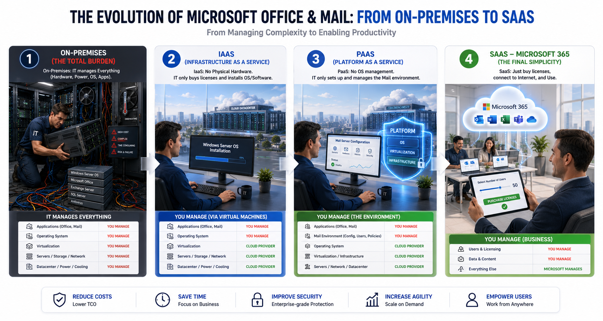
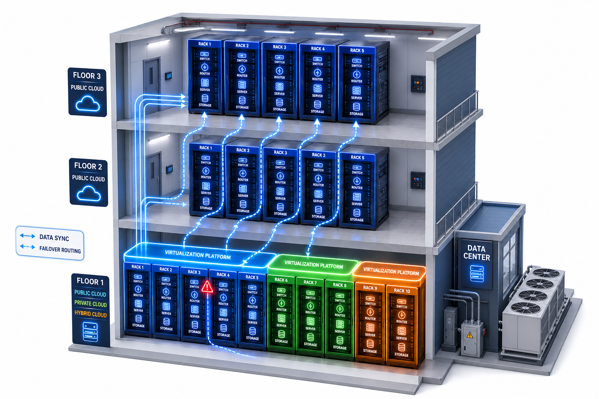

Phân biệt IaaS, PaaS, SaaS và Public, Private, Hybrid Cloud để Sales tư vấn đúng lớp nhu cầu, đúng mức vận hành và đúng góc nhìn kinh doanh.
🕐 ~25 phút đọc
🧱 IaaS · PaaS · SaaS
🌐 Public · Private · Hybrid
📌 Trước khi tư vấn: tách 2 khái niệm
Khách hàng thường nhầm giữa mô hình dịch vụ và mô hình triển khai. Sales cần tách rõ hai lớp này trước khi đề xuất giải pháp.
Deployment model
Mô hình triển khai Cloud
Câu hỏi cần trả lời: Hạ tầng vật lý nằm ở đâu? Ai sở hữu? Có dùng chung phần cứng với khách hàng khác không?
Ý nghĩa: Liên quan đến mức độ cô lập hạ tầng, kiểm soát vật lý, compliance, CAPEX/OPEX và chiến lược triển khai tổng thể.
Service model
Mô hình dịch vụ Cloud
Câu hỏi cần trả lời: Khách hàng thuê cái gì? Nhà cung cấp quản lý đến lớp nào? Khách hàng còn phải tự vận hành phần nào?
Ý nghĩa: Liên quan đến trách nhiệm vận hành của đội IT, tốc độ triển khai, tự động hóa, chi phí nhân sự và khả năng tập trung vào ứng dụng/nghiệp vụ.
Mô hình triển khai trả lời câu hỏi “hạ tầng đặt ở đâu và dùng riêng hay dùng chung?”. Mô hình dịch vụ trả lời câu hỏi “khách hàng thuê đến lớp nào và còn phải tự quản lý phần nào?”.
🧱 Mô hình dịch vụ Cloud: IaaS, PaaS, SaaS
Nhấp vào từng mô hình để xem trách nhiệm vận hành, ví dụ dịch vụ, positioning và câu hỏi discovery.

Cách đọc hình: càng đi từ On-premises sang SaaS, phần khách hàng phải tự vận hành càng giảm; nhà cung cấp quản lý nhiều lớp hơn, từ hạ tầng vật lý đến nền tảng và phần mềm hoàn chỉnh.
IaaS - Infrastructure as a Service
IaaS là mô hình Cloud gần giống hạ tầng truyền thống nhất. Khách hàng thuê máy ảo, network, storage, firewall, load balancer và vẫn vận hành nhiều lớp phía trên.
Khách hàng thường quản lý
Hệ điều hành
Middleware, runtime
Ứng dụng và dữ liệu
Cấu hình bảo mật bên trong workload
Nhà cung cấp thường quản lý
Data center
Phần cứng server, storage vật lý
Network nền tảng
Lớp ảo hóa
Sales positioning
Phù hợp khi khách hàng muốn migrate nhanh workload hiện hữu theo hướng lift-and-shift, cần kiểm soát hệ điều hành hoặc có ứng dụng legacy khó chuyển ngay sang PaaS. Ví dụ: Azure Virtual Machines, Amazon EC2, Google Compute Engine, UHost.
📊 Bảng so sánh nhanh IaaS, PaaS, SaaS cho Sales
Giữ lại các tiêu chí quan trọng nhất để Sales chọn đúng hướng tư vấn theo mức độ khách hàng muốn tự vận hành.
Tiêu chí
IaaS
PaaS
SaaS
Cách hiểu đơn giản
Thuê hạ tầng
Thuê nền tảng chạy ứng dụng
Thuê phần mềm dùng ngay
Gần giống on-premises nhất
Cao nhất
Trung bình
Thấp nhất
Mức độ khách hàng tự quản lý
Cao
Trung bình
Thấp
Mức độ nhà cung cấp quản lý
Thấp hơn PaaS/SaaS
Cao hơn IaaS
Cao nhất
Kiểm soát hệ điều hành
Có
Không hoặc rất hạn chế
Không
Tốc độ triển khai
Nhanh hơn mua server vật lý
Nhanh hơn IaaS cho app/database phù hợp
Nhanh nhất
Phù hợp với
Legacy app, lift-and-shift, workload cần custom OS
Web app, API, managed database, app hiện đại
Email, CRM, collaboration, ticketing, ERP/HRM dạng thuê bao
Rủi ro Sales cần lưu ý
Khách hàng vẫn phải vận hành OS, backup, security
Cần kiểm tra compatibility ứng dụng
Cần kiểm tra tính năng, tích hợp, dữ liệu, compliance
Muốn kiểm soát nhiều
Chấp nhận vận hành nhiều: ưu tiên IaaS.
Muốn giảm vận hành nền tảng
Tập trung vào app/data: ưu tiên PaaS.
Muốn dùng chức năng ngay
Ít tự vận hành nhất: ưu tiên SaaS.
🌐 Mô hình triển khai Cloud: Public, Private, Hybrid
Phần này trả lời câu hỏi hạ tầng nằm ở đâu, dùng riêng hay dùng chung, và phù hợp với chiến lược triển khai nào.
Public Cloud
Đám mây công cộng
Nhà cung cấp sở hữu và vận hành data center, server, storage, network nền tảng. Nhiều khách hàng cùng sử dụng hạ tầng vật lý theo mô hình multi-tenant, nhưng dữ liệu và môi trường được cách ly bằng phần mềm.
Giống thuê VPS/VM trên một cụm server lớn của nhà cung cấp: không sở hữu server vật lý, không quản lý data center, không thay ổ cứng, không vận hành điện/làm mát.
Dùng bao nhiêu trả bấy nhiêu.
Mở rộng nhanh, nhiều managed service.
Phù hợp startup, SME, e-commerce, web app, traffic biến động, dự án cần triển khai nhanh.
Private Cloud
Đám mây dùng riêng
Hạ tầng được dành riêng cho một tổ chức, có thể đặt tại data center của khách hàng, data center thuê chỗ đặt, hoặc môi trường dedicated do nhà cung cấp vận hành.
Giống thuê nguyên tủ rack, server dedicated hoặc đặt server riêng, sau đó triển khai ảo hóa như VMware, OpenStack hoặc nền tảng private cloud.
Cô lập phần cứng cao, kiểm soát vật lý tốt hơn.
Phù hợp compliance nghiêm ngặt.
Thường dùng cho ngân hàng, tài chính, chính phủ, core system có tải ổn định.
Hybrid Cloud
Đám mây lai
Kết hợp on-premises/private cloud với public cloud. Hai môi trường kết nối qua VPN, leased line, direct connect hoặc private interconnect.
Giống giữ một phần server/tủ rack hiện tại, đồng thời dùng thêm Public Cloud; hai bên kết nối để ứng dụng và dữ liệu trao đổi.
Phù hợp migration từng phần.
Core database ở on-premises, web/app/API ở Cloud.
Dùng cho DR lên Cloud hoặc mở rộng tạm thời khi có peak traffic.

Nhìn hình để hiểu phần “hạ tầng nằm ở đâu”
Sơ đồ data center giúp Sales hình dung lớp vật lý phía sau Cloud: rack server, storage, network, điện, làm mát và khu vực vận hành. Điểm khác nhau giữa Public, Private và Hybrid nằm ở việc phần hạ tầng này do ai sở hữu, dành riêng hay dùng chung, và kết nối với hệ thống hiện hữu như thế nào.
Public Cloud: khách hàng dùng năng lực từ data center của provider.
Private Cloud: hạ tầng được dành riêng cho một tổ chức.
Hybrid Cloud: kết nối hạ tầng hiện hữu/private với public cloud.
Khi gặp khách hàng, hãy dùng hình này để chuyển câu chuyện từ “Cloud là gì?” sang “khách hàng muốn hạ tầng nằm ở đâu, mức cô lập ra sao, và kết nối với hệ thống hiện tại thế nào?”.
🧭 Phân biệt deployment model và service model
Bảng này giúp tránh nhầm “public/private/hybrid” với “IaaS/PaaS/SaaS”.
Tiêu chí
Deployment model: Public / Private / Hybrid
Service model: IaaS / PaaS / SaaS
Bản chất
Cách sắp xếp vị trí, quyền sở hữu và mức độ chia sẻ hạ tầng vật lý.
Cách đóng gói năng lực CNTT thành dịch vụ để khách hàng sử dụng.
Câu hỏi chính
Hạ tầng này của ai, đặt ở đâu, dùng riêng hay dùng chung?
Khách hàng thuê cái gì, nhà cung cấp quản lý đến lớp nào?
Quyết định chính
Cô lập phần cứng, compliance, kết nối, data residency, CAPEX/OPEX.
Trách nhiệm vận hành, tốc độ triển khai, tự động hóa, yêu cầu kỹ năng IT.
Ví dụ theo ISP
Thuê VPS public, server dedicated/private, hoặc kết nối server riêng với cloud.
Thuê server trống, database/app platform managed, hoặc phần mềm dùng ngay.
Lưu ý quan trọng
Public Cloud vẫn có network riêng, subnet riêng, IAM riêng; “public” không có nghĩa dữ liệu bị public.
Một Public Cloud có thể cung cấp đủ IaaS, PaaS, SaaS; Private Cloud cũng có thể cung cấp IaaS/PaaS nội bộ.
🏢 Góc nhìn quản trị doanh nghiệp
Với CIO, CTO, CFO, Cloud là quyết định về tài chính, vận hành, bảo mật, tốc độ triển khai và năng lực cạnh tranh.
Tiêu chí quản trị
Nhìn theo Public / Private / Hybrid
Nhìn theo IaaS / PaaS / SaaS
Mục tiêu quản trị cốt lõi
Quản lý ranh giới vật lý và tài sản: server nằm ở đâu, ai sở hữu, có chia sẻ phần cứng không.
Quản lý lớp phần mềm và dữ liệu: đội IT còn tự cấu hình đến lớp nào, phần nào giao cho nhà cung cấp.
Mô hình tài chính
Private/on-premises thường gắn với CAPEX lớn; Public Cloud giúp chuyển sang OPEX.
IaaS linh hoạt nhưng vẫn có chi phí vận hành OS/license; PaaS/SaaS giảm nhiều chi phí vận hành nền tảng.
Trách nhiệm IT nội bộ
On-premises/private khiến IT vẫn quan tâm data center, điện, làm mát, phần cứng, network vật lý.
IaaS quản lý từ OS trở lên; PaaS tập trung app/data; SaaS chủ yếu quản lý user, quyền và dữ liệu.
Bảo mật & compliance
Private/Hybrid giải quyết cô lập dữ liệu, kiểm soát vị trí dữ liệu và yêu cầu pháp lý đặc thù.
Service model làm rõ shared responsibility: provider bảo vệ nền tảng, khách hàng bảo vệ cấu hình, dữ liệu, truy cập, ứng dụng.
Time-to-market
Public Cloud giảm thời gian mua sắm, lắp đặt, nghiệm thu phần cứng.
PaaS/SaaS giảm thời gian cài OS, middleware, database, giúp đưa dịch vụ ra thị trường nhanh hơn.
Năng lực đổi mới
Public Cloud giúp tiếp cận nhanh AI, Analytics, IoT, DevOps, Security service.
PaaS/SaaS giúp đội kỹ thuật tập trung vào giá trị nghiệp vụ thay vì vận hành nền tảng.
💬 Tips cho Sales theo từng nhóm khách hàng
CFO / Finance
Chuyển CAPEX sang OPEX.
Giảm đầu tư ban đầu cho server, storage, data center, license.
Dùng đến đâu trả đến đó, tránh over-provisioning 3-5 năm.
Theo dõi và phân bổ chi phí theo phòng ban/dự án.
“Với Cloud, doanh nghiệp không cần đầu tư trước một lượng lớn phần cứng. Chi phí chuyển thành chi phí vận hành theo mức sử dụng thực tế, linh hoạt hơn với hệ thống có nhu cầu tăng giảm theo mùa vụ hoặc dự án.”
CIO / CTO / IT Manager
Giảm tải vận hành phần cứng và nền tảng.
Chuẩn hóa môi trường triển khai.
Tăng tốc provisioning server/database/app platform.
Tăng khả năng mở rộng, backup, DR, monitoring.
“IaaS phù hợp migration nhanh và vẫn kiểm soát OS. Khi tiến lên PaaS hoặc SaaS, đội IT giảm đáng kể việc vá lỗi, cài nền tảng, duy trì runtime để tập trung hơn vào ứng dụng và trải nghiệm người dùng.”
Business Owner
Ra mắt sản phẩm nhanh hơn.
Dễ mở rộng khi có chiến dịch bán hàng hoặc sự kiện lớn.
Thử nghiệm nhanh, thất bại nhanh, tối ưu nhanh.
Tiếp cận nhanh AI, data analytics, automation.
“Cloud giúp doanh nghiệp thử nghiệm dịch vụ mới nhanh hơn. Thay vì chờ mua server trong nhiều tuần, đội kỹ thuật có thể tạo môi trường trong vài phút hoặc vài giờ để business phản ứng nhanh hơn với thị trường.”
🚀 Kết luận mục 3 cho Sales
Nhớ 3 lớp thông điệp
Deployment model trả lời: hạ tầng đặt ở đâu, dùng riêng hay dùng chung? Service model trả lời: khách hàng thuê đến lớp nào, nhà cung cấp quản lý phần nào? Business value trả lời: khách hàng tiết kiệm gì, nhanh hơn ở đâu, giảm rủi ro nào, và đội IT được giải phóng khỏi việc vận hành nào?